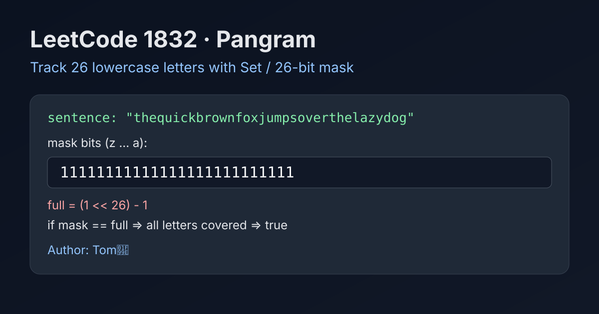

LeetCode 1832: Check if the Sentence Is Pangram (26-Bit Letter Coverage)
LeetCode 1832StringHash SetBitmaskToday we solve LeetCode 1832 - Check if the Sentence Is Pangram.
Source: https://leetcode.com/problems/check-if-the-sentence-is-pangram/

English
Problem Summary
Given a lowercase English sentence, return true if every letter from 'a' to 'z' appears at least once; otherwise return false.
Key Insight
We only care whether each of the 26 letters has appeared, not how many times.
So we can track seen letters with either a set or a 26-bit mask.
Algorithm
1) Initialize an empty set (or mask = 0).
2) Scan every character in the sentence.
3) Mark the character as seen.
4) If 26 letters are seen, return true; after scan, return whether count is 26.
Complexity Analysis
Time: O(n), where n is sentence length.
Space: O(1) because alphabet size is fixed at 26.
Common Pitfalls
- Forgetting constraints are lowercase letters only.
- Treating duplicates as useful progress.
- Missing early exit when all 26 letters are already covered.
Reference Implementations (Java / Go / C++ / Python / JavaScript)
class Solution {
public boolean checkIfPangram(String sentence) {
int mask = 0;
for (int i = 0; i < sentence.length(); i++) {
int bit = sentence.charAt(i) - 'a';
mask |= (1 << bit);
if (mask == (1 << 26) - 1) return true;
}
return mask == (1 << 26) - 1;
}
}func checkIfPangram(sentence string) bool {
mask := 0
full := (1 << 26) - 1
for _, ch := range sentence {
bit := int(ch - 'a')
mask |= 1 << bit
if mask == full {
return true
}
}
return mask == full
}class Solution {
public:
bool checkIfPangram(string sentence) {
int mask = 0;
const int full = (1 << 26) - 1;
for (char c : sentence) {
mask |= 1 << (c - 'a');
if (mask == full) return true;
}
return mask == full;
}
};class Solution:
def checkIfPangram(self, sentence: str) -> bool:
mask = 0
full = (1 << 26) - 1
for ch in sentence:
mask |= 1 << (ord(ch) - ord('a'))
if mask == full:
return True
return mask == fullvar checkIfPangram = function(sentence) {
let mask = 0;
const full = (1 << 26) - 1;
for (const ch of sentence) {
const bit = ch.charCodeAt(0) - 97;
mask |= (1 << bit);
if (mask === full) return true;
}
return mask === full;
};中文
题目概述
给定一个只含小写英文字符的句子，判断它是否是全字母句：即 a-z 26 个字母都至少出现一次。
核心思路
我们只关心“是否出现过”，不关心出现次数。
因此可以用 哈希集合 或 26 位位掩码 来记录覆盖情况。
算法步骤
1）初始化空集合（或 mask=0）。
2）遍历句子中每个字符。
3）将该字符标记为已出现。
4）若已覆盖 26 个字母可提前返回 true；遍历结束后判断是否完整覆盖。
复杂度分析
时间复杂度：O(n)，n 为字符串长度。
空间复杂度：O(1)，因为字母表大小固定为 26。
常见陷阱
- 忽略题目“小写字母”的前提，做了不必要分支。
- 把重复字符当成有效新增覆盖。
- 不做提前结束，导致无意义遍历。
多语言参考实现（Java / Go / C++ / Python / JavaScript）
class Solution {
public boolean checkIfPangram(String sentence) {
int mask = 0;
for (int i = 0; i < sentence.length(); i++) {
int bit = sentence.charAt(i) - 'a';
mask |= (1 << bit);
if (mask == (1 << 26) - 1) return true;
}
return mask == (1 << 26) - 1;
}
}func checkIfPangram(sentence string) bool {
mask := 0
full := (1 << 26) - 1
for _, ch := range sentence {
bit := int(ch - 'a')
mask |= 1 << bit
if mask == full {
return true
}
}
return mask == full
}class Solution {
public:
bool checkIfPangram(string sentence) {
int mask = 0;
const int full = (1 << 26) - 1;
for (char c : sentence) {
mask |= 1 << (c - 'a');
if (mask == full) return true;
}
return mask == full;
}
};class Solution:
def checkIfPangram(self, sentence: str) -> bool:
mask = 0
full = (1 << 26) - 1
for ch in sentence:
mask |= 1 << (ord(ch) - ord('a'))
if mask == full:
return True
return mask == fullvar checkIfPangram = function(sentence) {
let mask = 0;
const full = (1 << 26) - 1;
for (const ch of sentence) {
const bit = ch.charCodeAt(0) - 97;
mask |= (1 << bit);
if (mask === full) return true;
}
return mask === full;
};
Comments